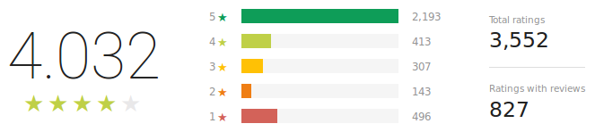
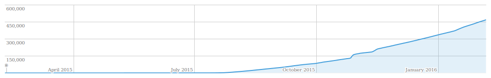
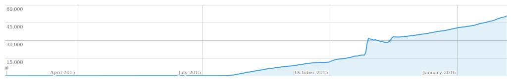
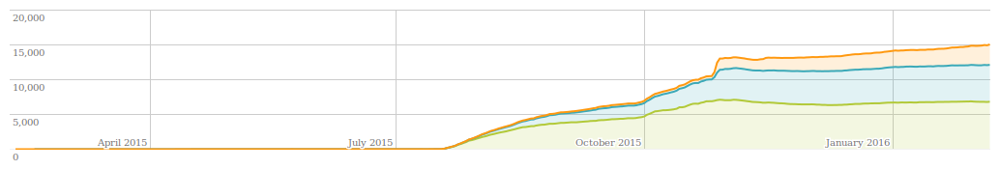
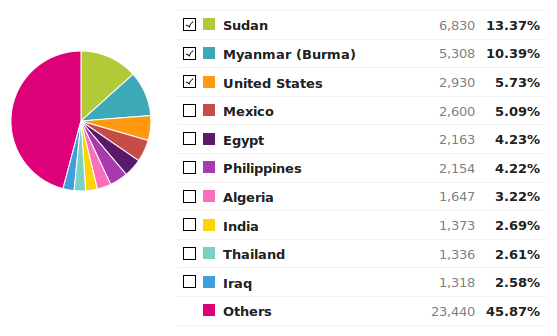

One year
One year ago on 6th January 2015, I've published MSSNGR. The APP which solved a simple problem for me. I thought it might be helpful for someone else too.
In the last year you people started to use MSSNGR, which made me proud based on the minimal effort I've put in the development. During the past year, Facebook changed their API, which to be honest was expected, hence MSSNGR doesn't work anymore for a lots of us. In fact, it doesn't work anymore on my devices.
So now, the 24 lines of source code is yours. Enjoy.
Stats
Ratings

Total installs

Current installs

Current installs by country

